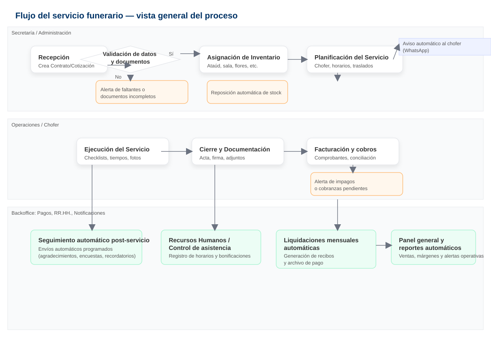
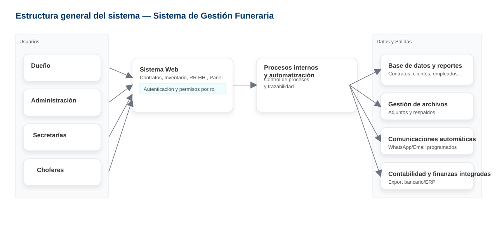

Vista general del proceso operativo y la estructura del sistema.
Ilustra cómo cada módulo automatiza tareas y centraliza información clave.


Este esquema resume cómo el sistema automatiza la gestión completa de la empresa, desde la carga de contratos hasta la contabilidad y la comunicación con clientes y personal.
La implementación es modular, escalable y adaptable a los procesos actuales sin afectar la operación diaria.